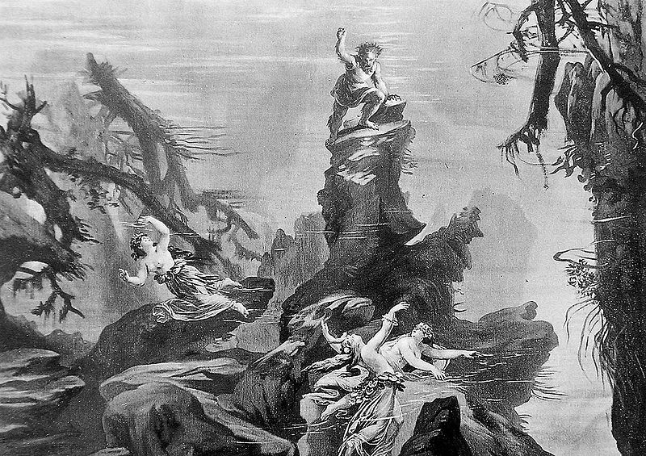

Der Ring des Nibelungen

Overview of Der Ring des Nibelungen
Der Ring des Nibelungen (often abbreviated Der Ring), WWV 86, is a cycle of four German-language epic music dramas composed by Richard Wagner. The works are based loosely on characters from Germanic heroic legend, namely Norse legendary sagas and the Nibelungenlied. Der Ring is often considered to be the most extraordinary achievement in the history of opera, and represents in its full essence the spirit of 19th century German romanticism.
List of characters
Gods
- Wotan, King of the Gods (god of light, air, and wind) (bass-baritone)
- Fricka, Wotan's wife, goddess of marriage (mezzo-soprano)
- Freia, Fricka's sister, goddess of love, youth, and beauty (soprano)
- Donner, Fricka's brother, god of thunder (baritone)
- Froh, Fricka's brother, god of spring/happiness (tenor)
- Erda, goddess of wisdom/fate/Earth (contralto)
- Loge, demigod of fire (tenor)
- The Norns, the weavers of fate, daughters of Erda (contralto, mezzo-soprano, soprano)
Mortals
Wälsungs
- Siegmund, mortal son of Wotan (tenor)
- Sieglinde, his twin sister (soprano)
- Siegfried, their son (tenor)
Neidings
- Hunding, Sieglinde's husband, chief of the Neidings (bass)
Gibichungs
- Gunther, King of the Gibichungs (baritone)
- Gutrune, his sister (soprano)
- Hagen, their half-brother, and Alberich's son (bass)
- A male choir of Gibichung vassals and a small female choir of Gibichung women
Valkyries
- Brünnhilde (soprano)
- Waltraute (mezzo-soprano)
- Helmwige (soprano)
- Gerhilde (soprano)
- Siegrune (mezzo-soprano)
- Schwertleite (contralto)
- Ortlinde (soprano)
- Grimgerde (contralto)
- Rossweisse (mezzo-soprano)
Rhinemaidens, Giants & Nibelungs
Rhinemaidens
- Woglinde (soprano)
- Wellgunde (soprano)
- Flosshilde (mezzo-soprano)
Giants
- Fasolt (bass-baritone/high bass)
- Fafner, his brother, later turned into a dragon (bass)
Nibelungs
- Alberich (bass-baritone)
- Mime, his brother, and Siegfried's foster father (tenor)
Other characters
- The Voice of a Woodbird (soprano)
Parts of Der Ring des Nibelungen, in order
- Das Rheingold: It acts as the prelude to Der Ring, as it introduces most of the recurring characters in the epic, such as Wotan and Alberich.
- Die Walküre: The Wülsung twins Sieglinde and Siegmund, separated in childhood, meet and fall in love. This union angers the gods who demand that Siegmund must die. Sieglinde and the couple's unborn child are saved by the defiant actions of Wotan's daughter, the title character, Valkyrie Brünnhilde, who as a result faces the gods' retribution.
- Siegfried: Born from the incestuous love between the twins Siegmund and Sieglinde, Siegfried was raised in the secret of the forest by the dwarf Mime who took him in after the tragic death of his parents. Mime intends to make Siegfried his instrument to conquer the Ring, which ensures absolute power. But Siegfried thwarted his plans and reforged "Nothung", his father's sword, with which he managed to overcome all obstacles. He kills the dragon Fafner and seizes the Ring over which the latter was watching. Siegfried defies the god Wotan and conquers his daughter, Brünnhilde, the Valkyrie sleeping on a rock surrounded by impassable flames.
- Götterdämmerung: Siegfried is tricked by Hagen, son of Alberich, into drinking a potion that will make him forget his love for Brünnhilde. He then offers to use his power to win Brünnhilde for Hagen's half-brother Gunther - all part of Hagen's plan to grab the Ring, currently in her possession. Siegfried succeeds, puts the Ring on his own finger and is subsequently killed by Hagen. But when Hagen tries to remove the Ring he is resisted by Siegfried's dead body. Brünnhilde takes the Ring back and rides with it into Siegfried's funeral pyre to purify it. As the opera closes, the Rhine overflows its banks and the Rhinemaidens reclaim the Ring. All the while, up in Valhalla, Wotan has silently been waiting for the end of the gods to arrive...